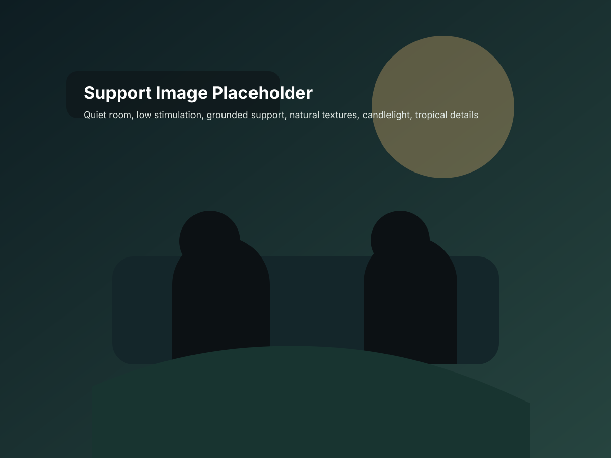

What most retreat teams miss about psychospiritual crisis
For the team that already knows sincerity is not the same thing as readiness.
Most teams do not fail because they do not care. They fail because they mistake heart for readiness. They know how to open a room, hold a process, guide a ceremony, or talk about transformation. They do not always know how to recognize the moment when intensity stops being a hard process and becomes something the room is no longer casually equipped to hold.
That gap is not theoretical. A 2026 study in JAMA Network Open found major variability in the safety practices of publicly advertised psychedelic retreats. Costa Rica appeared among the organization bases in the study, and not all retreats reported consistent involvement of licensed or emergency-trained personnel. That does not mean a retreat needs to become a clinic. It does mean the category is uneven, and sincerity alone does not protect a room.
The first miss is usually misnaming the moment
When a participant becomes disoriented, flooded, dissociated, paranoid, agitated, or spiritually overwhelmed, teams often reach for whatever language they are already most attached to. Some over-spiritualize. Some over-medicalize. Some minimize. Some freeze.
The work is to name the moment more accurately. Not every hard process is a crisis. Not every crisis is medical first. Not every spiritual emergency can be safely left to intuition. The teams that do better are the ones that can hold this tension without collapsing into certainty.
The second miss is role confusion
When things intensify, the room asks simple questions fast. Who is leading? Who is supporting? Who is escalating? Who should stop talking? If the answers are fuzzy, the crisis often grows because the team grows it.
That is one reason safety-focused training ecosystems now exist. ICEERS' AyaSafety program is explicitly built around increasing the safety of ayahuasca sessions in non-traditional contexts. The existence of that course alone tells you this problem is no longer fringe. Safer practice has become a teachable need.
The third miss is ignoring the field around the incident
A psychospiritual crisis is rarely only about one person. It is about the room, the signal between team members, the amount of stimulation, the hidden power dynamics, the integrity of the guide, the fatigue level of the staff, and whether the container has any real capacity to down-regulate when intensity starts to spread.
The point is not to be perfect. The point is to stop pretending that beautiful intention is enough. It is not. A mature space needs discernment, threshold clarity, and a response field that can stay calmer than the moment it is meeting.
Want to see where your own space is strong and where it is exposed?
Open the readiness scorecard and surface the hidden gaps before a hard night teaches the lesson in public.
